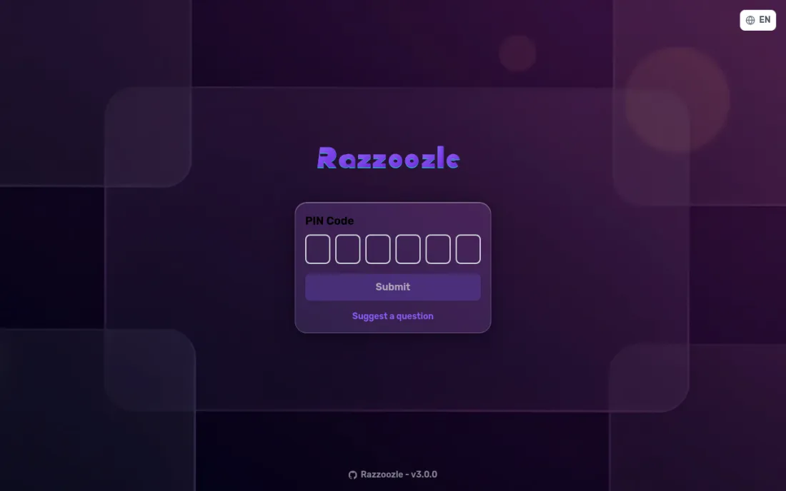

Presenter + phone, in real time
A host opens a game on the big screen, players join by PIN on their phones — colored answer tiles with shapes, a circular countdown and an animated podium.
Open-source · self-hosted
A self-hosted, real-time Kahoot-style quiz platform. Host on the big screen, players join by PIN on their phones, and everyone races to answer.
See it in action

Host on the big screen; players scan a QR code or punch in the game PIN and play from their own phones — no app, no signup.

Recolor the whole game from the manager Design tab — colors, per-view backgrounds, logo, radius — or drop in a downloadable skeleton ZIP theme. Flat cream by default, optional violet glass.

Live leaderboards with overtake animations, 15 achievements, medals, streaks, confetti and sound — plus a personal trophy gallery and an end-of-game awards recap.

Multiple-choice, type-answer and slider questions; classic host mode, team mode, or solo practice via a share link. Works as an installable PWA, even offline.
Under the hood
A pnpm monorepo — React + Vite on the front, Node + Socket.IO on the back, shared Zod-validated types, shipped as a single Docker image.
 React
React TypeScript
TypeScript Vite
Vite Tailwind CSS
Tailwind CSS PWA
PWA Motion
Motion Node.js
Node.js Socket.IO
Socket.IO Zod
Zod i18next
i18next Prometheus
Prometheus Docker
Docker pnpm
pnpm Vitest
VitestBuilt for game nights
Classic Kahoot-style play, rebuilt around a clean flat cream design — with gamification, teams, solo practice and a fully themable UI.
A host opens a game on the big screen, players join by PIN on their phones — colored answer tiles with shapes, a circular countdown and an animated podium.
15 achievements, medals, streaks, confetti and sound chimes, plus a personal trophy gallery and an animated end-game awards recap.
Red, blue, green and yellow teams with a live team leaderboard — or practise any quiz alone via a solo share link with its own score history.
A live manager Design tab — colours, per-view backgrounds, logo, radius and a flat ⇄ glass toggle. Download or upload a whole-game theme as an LLM-readable skeleton ZIP.
Installable and offline-aware, with optional vibration feedback on player phones for the countdown and answers — reduced-motion aware throughout.
Generate question and theme imagery on-device via ComfyUI (Z-Image), or plug in a cloud provider — API keys always stay server-side.
Rich Open-Graph link previews, a result page with play-it-yourself CTAs, downloadable winner stickers, plus a manager-installable plugin and addon system.
A /display projector view, low-latency mode, crash-recovery and reconnect, and an MCP server for AI-tool control — hardened and load-tested to 600 players.
Every player gets a generated DiceBear avatar — pick a style and reroll, or upload your own. Avatars float around the lobby and show up on leaderboards, the podium and the awards.
Ships as a Docker image you run with one command. Prometheus metrics and structured pino logs are built in, so you can actually watch a live game's health.
Author quizzes in the manager: multiple question types, a media picker for images, and an importable quiz catalog — no JSON wrangling required.
Full UI in English, German and Chinese with an instant switch — players and hosts each get their own language.
However you play
Host on the big screen.
Red vs blue vs green vs yellow.
Practice or share a quiz.
Tap a colored shape to answer.
Spell it out on your keyboard.
Drag to the closest number.
Clone the repo and run it with Docker Compose. Your data stays in a local config volume — put it behind your own reverse proxy for TLS and a public name.
git clone …/Razzoozle && cd Razzoozle && docker compose up -d